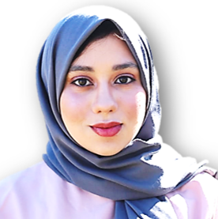
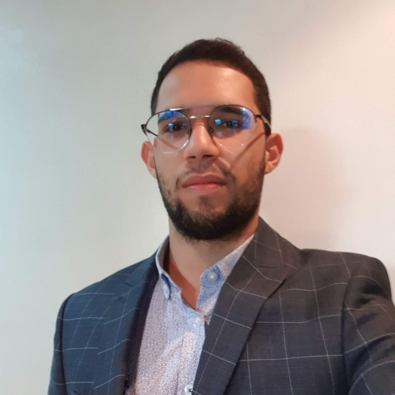
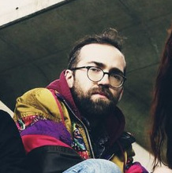
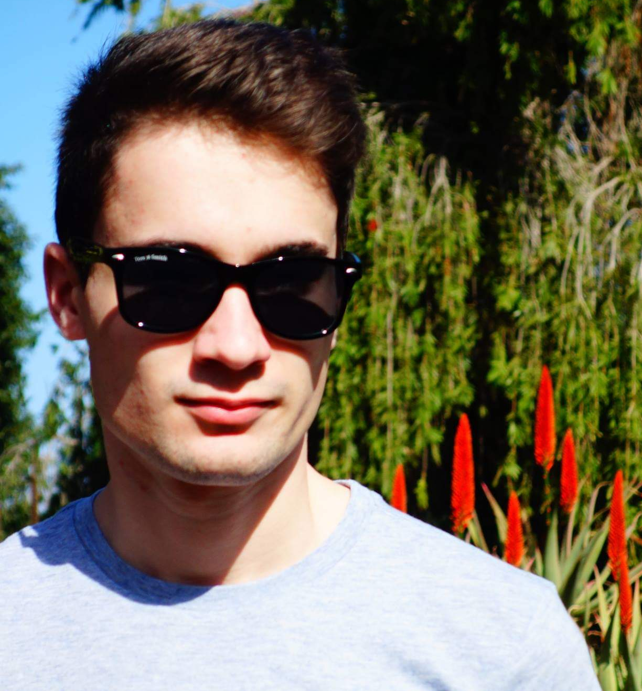
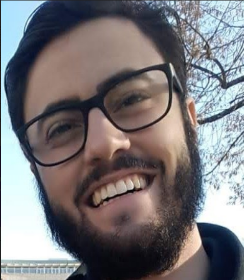

.png)
Permanent Members
-
 Gerson Sunyé
Associate Professor
Nantes University
Gerson Sunyé
Associate Professor
Nantes University
-
 Massimo Tisi
Associate Professor
IMT Atlantique
Massimo Tisi
Associate Professor
IMT Atlantique
- Erwan Bousse Associate Professor Nantes University
-
 Hugo Bruneliere
Research Engineer
IMT Atlantique
Hugo Bruneliere
Research Engineer
IMT Atlantique
-
 Théo Le Calvar
Associate Professor
IMT Atlantique
Théo Le Calvar
Associate Professor
IMT Atlantique
-
 Jean-Marie Mottu
Associate Professor
Nantes University
Jean-Marie Mottu
Associate Professor
Nantes University
- Dalila Tamzalit Associate Professor Nantes University
Transient Members
-  Hiba Ajabri Ph.D. Student Co-supervision with VELO and CPS3 teams
-  Ali Benjilany Ph.D. Student Co-supervision with VELO team
-  Matthew Coyle Ph.D. Student Co-supervision with TASC team
- Yasmina Daliyoucef Ph.D. Student
-  Josselin Enet Ph.D. Student
-  James Miranda Ph.D. Student

Former Members

- Jolan Philippe
- Faezeh Khorram
- Abdelghani Alidra
- Mohammadreza Sharbaf
- Gustavo Sousa
- Gwendal Daniel
- Florent Marchand de Kerchove
- Matthias Nantier
- Zheng Cheng
- Adel Ferdjoukh
- Kevin Corre
- Yoann Vernageau
- Thibault Béziers la Fosse
- Imad Berrouyne
- Joachim Hotonnier
- Alix Delage
- Kylian Gerard
- Bilal Molli